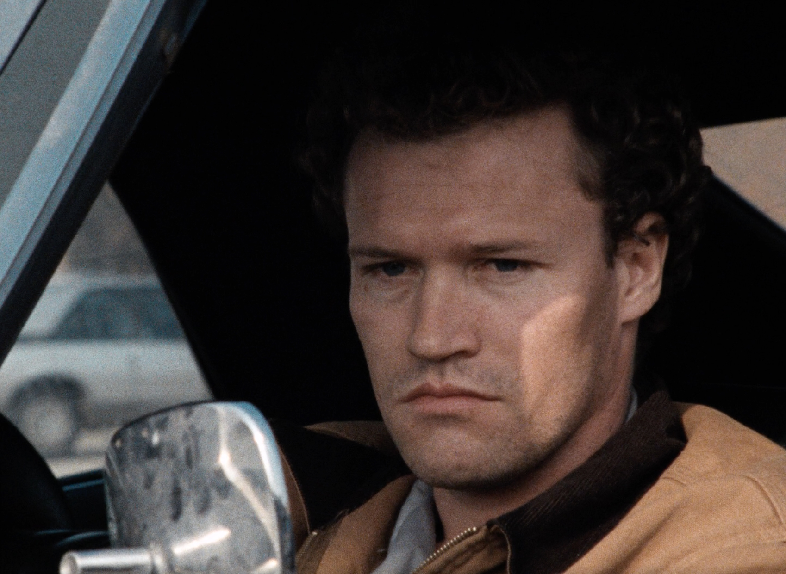
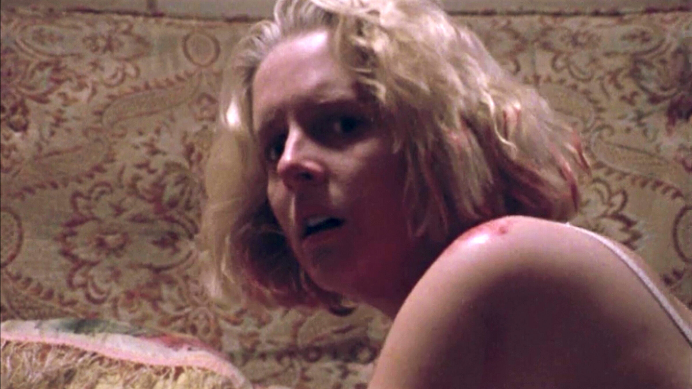
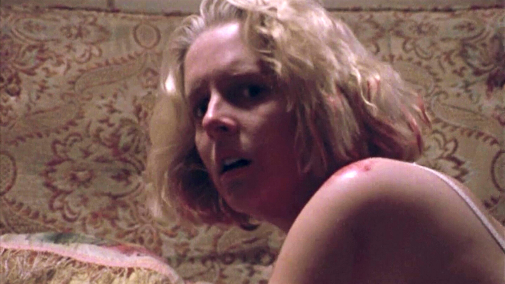

1990 Spirit Award Nominee for Best Feature, Best Director, Best Male Lead, Best Supporting Male, Best Supporting Female, And Best Screenplay.
"This film gives off a dark chill that follows you all the way home."
-Peter Travers, Rolling Stones
"A low-budget tour de force that provides an unforgettable portrait of the pathology of a man for whom killing is not a crime but simply a way of passing time and relieving boredom."
-Rodger Ebert, Chicago Sun-Times
"The film's artful gaucheness saves it from prurience and gives the story its ghastly sense of godlessness. Yet beneath the non-interventionist style there is a wealth of symbolic or motivic detail."
- Nigel Andrews, Finacial Times
ORIGINAL TRAILER
GALLERY
 
 
Yeah, I killed my Mama.